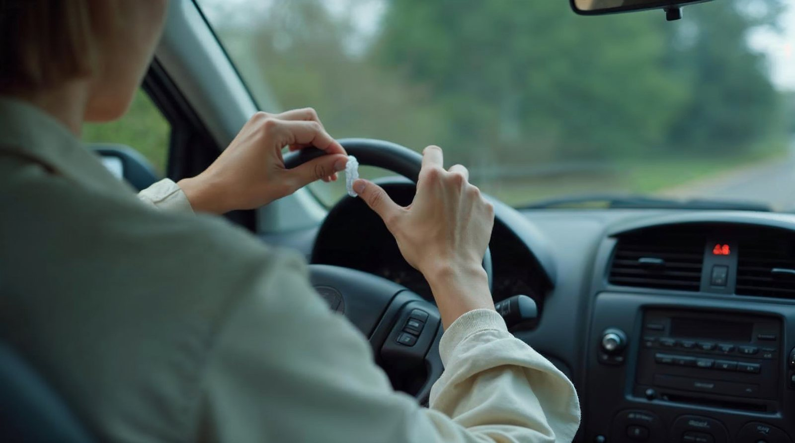
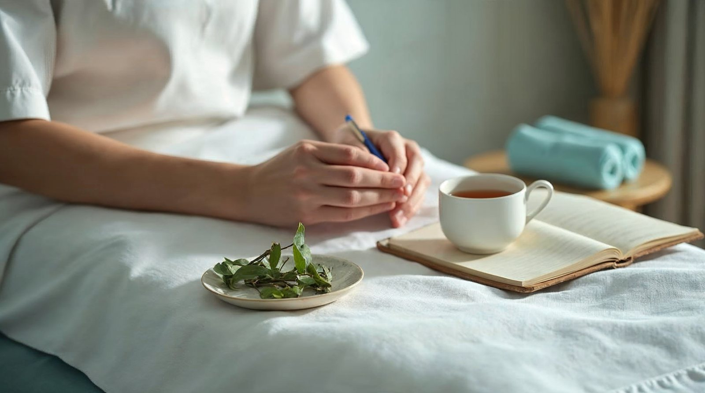
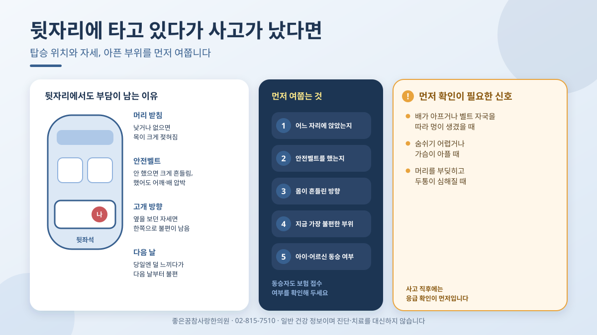

이종호 한의사 감수좋은꿈참사랑한의원 대표원장 (한의사 면허번호 19769)발행 2026-11-23 · 수정 2026-11-26
이 글의 차례
뒷자리에 타고 있었더라도 사고 순간 몸이 흔들리며 목, 어깨, 허리에 부담이 남을 수 있어 통증이 있다면 살펴보는 것이 좋습니다. 안전벨트를 하지 않았거나 고개를 돌리고 있었다면 더 불편할 수 있고, 배나 가슴이 아프다면 가까운 응급실 확인이 먼저입니다.
운전한 사람이 아니라는 이유로, 또는 크게 부딪히지 않았다는 생각에 넘기기 쉽지만 뒷좌석은 몸을 받쳐 주는 장치가 앞좌석보다 적은 경우가 많습니다. 사고 순간 어디를 보고 있었는지, 어떤 자세였는지에 따라 불편한 곳이 달라질 수 있어, 그때의 모습을 기억나는 대로 적어 두시면 살피기가 한결 쉬워집니다.
왜 이런 불편이 생길 수 있나요
- 뒷좌석은 머리 받침이 낮거나 없는 경우가 있어 목이 크게 젖혀질 수 있습니다.
- 안전벨트를 하지 않으면 앞좌석에 부딪히거나 몸이 크게 흔들릴 수 있습니다.
- 안전벨트를 했더라도 벨트가 지나간 어깨와 배 쪽에 압박이 남을 수 있습니다.
- 휴대폰을 보거나 옆을 보던 자세에서 충격을 받으면 한쪽으로 불편이 남기도 합니다.
- 사고 당일에는 놀라서 통증을 덜 느끼다가 다음 날부터 불편해지는 경우도 있습니다.
- 뼈 상태는 엑스레이로 확인하지만, 근육과 인대가 다친 정도는 엑스레이에 잘 보이지 않을 수 있습니다.
먼저 이렇게 여쭙니다
- 어느 자리에 앉아 계셨나요?
- 안전벨트를 하고 계셨나요?
- 사고 순간 몸이 어느 방향으로 흔들렸나요?
- 지금 가장 불편한 부위는 어디인가요?
- 아이나 어르신과 함께 타고 계셨나요?
스스로 점검해 보세요
- 사고 당시 안전벨트를 하지 않았거나 느슨하게 매고 있었다
- 고개를 옆으로 돌리거나 숙이고 있었다
- 머리 받침이 낮거나 없는 자리에 앉아 있었다
- 다음 날부터 목이나 허리가 뻐근해졌다
- 벨트가 지나간 자리에 멍이나 통증이 있다
- 사고 뒤 잠들기 어렵거나 차를 타는 것이 불안하다
- 함께 탔던 아이가 평소와 다르게 보채거나 잠을 설친다
두세 가지 이상 해당한다면 통증이 가볍더라도 진찰을 받아 두시는 편이 좋습니다. 벨트 자리의 멍이나 배·가슴 통증이 있다면 한의원보다 가까운 응급실에서 먼저 확인받으세요.
일상에서 먼저 해 볼 수 있는 것
- 통증 부위와 시작 시점을 메모해 두기
- 무거운 물건 들기 피하기
- 오래 앉아 있을 때 자주 일어나 움직이기
- 동승자도 보험 접수 여부 확인하기
- 아이와 함께 탔다면 아이의 잠과 식사 변화도 살피고, 평소와 다르면 소아청소년과에서 먼저 확인받기
사고 뒤 며칠은 목을 갑자기 크게 돌리거나 허리를 깊이 숙이는 동작을 줄이고, 아프지 않은 범위에서 천천히 움직여 주세요. 사고 차량 사진이나 블랙박스 영상이 있다면 앉아 있던 자리와 충격 방향을 설명할 때 도움이 됩니다.

예를 들면 이런 경우입니다
- 예를 들어 퇴근길 택시 뒷좌석에서 휴대폰을 보다가 뒤차에 받힌 직장인이라면, 고개를 숙인 채 충격을 받아 다음 날 아침 고개를 돌리기 불편할 수 있습니다. 사고 순간 어느 쪽을 보고 있었는지 적어 두세요.
- 예를 들어 카시트에 앉은 아이 옆자리에 타고 있던 육아 중인 분이라면, 아이를 먼저 챙기느라 자신의 통증은 미루기 쉽습니다. 며칠 뒤 아이를 안아 올릴 때 허리가 시큰하다면 그때라도 말씀해 주시고, 아이 상태는 소아청소년과에서 먼저 확인받으세요.
- 예를 들어 뒷자리에 앉아 계시던 어르신이 벨트가 지나간 가슴 쪽이 뻐근하고 깊게 숨 쉴 때 아프다고 하시는 경우라면, 갈비뼈 확인이 먼저 필요할 수 있어 가까운 응급실을 먼저 찾으세요.
얼마나 지켜보고, 언제 바로 확인할까요
- 사고 뒤 2~3일 사이에 뻐근함이 새로 생기거나 커질 수 있습니다. 통증이 있다면 참고 넘기기보다 가능한 한 일찍 진찰을 받아 시작 시점을 기록해 두는 편이 좋습니다.
- 가벼운 뻐근함이 며칠에 걸쳐 줄어든다면 무리하지 않으며 지켜보되, 일주일이 지나도 그대로이거나 점점 심해진다면 진료를 받아 보세요.
- 이럴 땐 바로 가까운 응급실로 가세요. 배가 아프거나 벨트 자국을 따라 멍이 생긴 경우, 숨쉬기 어렵거나 가슴이 아픈 경우, 머리를 부딪힌 뒤 두통이 심해지거나 토하거나 자꾸 졸린 경우, 의식이 흐려진 적이 있는 경우, 팔다리가 저리거나 힘이 빠지는 경우, 대소변 조절이 어려운 경우입니다.
- 임신 중에 동승했다면 아픈 곳이 없더라도 산부인과에서 먼저 확인받으세요.

한의원에서 함께 살필 수 있는 경우
- 동승자로 사고 뒤 목·어깨가 불편한 경우 탑승 자세와 동작을 기준으로 살핍니다.
- 아이와 함께 탔던 경우 아이의 잠과 컨디션도 함께 여쭙니다.
- 필요하다고 판단될 때 상태에 맞는 치료를 이어서 씁니다.
좋은꿈참사랑한의원에서는 탑승 위치와 자세, 아픈 동작을 먼저 듣고 응급 신호가 없는지 확인합니다. 필요하다고 판단될 때 초음파 등으로 살핀 뒤 침·약침·추나 등 상태에 맞는 방법을 정하고, 함께 탔던 가족의 잠과 컨디션도 여쭙습니다.
처음 오시면 접수 때 사고 날짜와 보험 접수 정보를 확인하고, 진료실에서 사고 경위와 앉은 자리, 안전벨트 착용 여부, 몸이 흔들린 방향을 여쭙니다. 맥을 짚은 뒤 목·어깨·허리의 움직임과 저림 여부를 살피고, 다른 병원 검사 결과가 있으면 함께 봅니다.
오늘 받을 치료와 이유를 먼저 설명해 드리고, 귀가 전에는 집에서 피할 동작과 다음 방문 시기를 안내해 드립니다. 동승자의 자동차보험 접수 절차와 조건은 보험사에 확인하시고, 한의원 접수 방법은 방문 전 전화로 확인해 주세요.
이렇게 기록해 오시면 상담이 쉬워집니다
- 앉은 자리와 안전벨트 착용 여부
- 통증 부위와 시작 시점
- 병원 검사 결과
- 보험 접수 번호(동승자도 확인)
- 사고 뒤 잠과 긴장 상태의 변화
이런 증상은 먼저 확인이 필요합니다
- 복부 통증이 있거나 안전벨트 자국을 따라 멍이 생긴 경우
- 스스로를 해칠 생각이 들면 ☎ 109로 바로 연락하세요.
이런 신호가 있으면 한의원보다 가까운 병원이나 응급실을 먼저 찾으세요.
함께 읽으면 좋은 글
- 교통사고 다음 날부터 뻐근해지기 시작했어요
- 버스나 택시를 타고 가다 급정거로 몸이 쏠린 뒤 목과 허리가 아플 때는 어떻게 하나요?
- 교통사고 뒤 자동차보험으로 한의원 치료를 받으려면 어떻게 진행되나요?

여쭙는 것
- 어느 자리에 앉아 계셨나요?
- 안전벨트를 하고 계셨나요?
- 사고 순간 몸이 어느 방향으로 흔들렸나요?
생활에서 해 볼 것
- 통증 부위와 시작 시점을 메모해 두기
- 무거운 물건 들기 피하기
- 오래 앉아 있을 때 자주 일어나 움직이기
한의원에서 함께 살필 것
- 동승자로 사고 뒤 목·어깨가 불편한 경우 탑승 자세와 동작을 기준으로 살핍니다.
- 아이와 함께 탔던 경우 아이의 잠과 컨디션도 함께 여쭙니다.
- 필요하다고 판단될 때 상태에 맞는 치료를 이어서 씁니다.
먼저 확인이 필요한 신호
- 복부 통증이 있거나 안전벨트 자국을 따라 멍이 생긴 경우
- 스스로를 해칠 생각이 들면 109로 바로 연락하세요.
한눈에 보는 표
| 구분 | 핵심 |
|---|---|
| 여쭙는 것 | 어느 자리에 앉아 계셨나요? 안전벨트를 하고 계셨나요? |
| 생활에서 해 볼 것 | 통증 부위와 시작 시점을 메모해 두기 무거운 물건 들기 피하기 |
| 한의원에서 함께 살필 것 | 동승자로 사고 뒤 목·어깨가 불편한 경우 탑승 자세와 동작을 기준으로 살핍니다. 아이와 함께 탔던 경우 아이의 잠과 컨디션도 함께 여쭙니다. |
| 먼저 확인이 필요한 신호 | 복부 통증이 있거나 안전벨트 자국을 따라 멍이 생긴 경우 스스로를 해칠 생각이 들면 109로 바로 연락하세요. |
자주 묻는 질문
동승자도 자동차보험으로 진료받을 수 있나요?
보험사 접수 여부에 따라 달라 먼저 보험사에 확인해 주세요. 접수 번호를 받으셨다면 한의원 접수 방법은 방문 전 전화로 확인해 주세요.
아이도 함께 볼 수 있나요?
아이의 상태도 함께 여쭙고, 필요하면 소아청소년과 진료를 함께 권합니다.
사고 당일엔 괜찮았는데 며칠 뒤에 아파도 되나요?
통증이 늦게 시작되는 경우도 있어, 사고 경위와 함께 말씀해 주시면 살핍니다.
아이가 카시트에 앉아 있었는데도 살펴야 하나요?
카시트에 앉아 있었더라도 아이가 평소와 다르게 보채거나 잠을 설치면 소아청소년과 진료를 먼저 받고, 이후 상태를 함께 여쭙습니다.
병원 진료와 한의원 진료를 함께 받아도 되나요?
가능한 경우가 많습니다. 다른 병원에서 받은 검사와 치료 내역을 알려 주시면 겹치지 않게 살핍니다.
좋은꿈참사랑한의원은 재진 때 지난번 이야기부터 이어서 여쭙니다. 진료시간과 예약은 오시는 길에서 확인하세요.
어디서 상담받을 수 있나요?
좋은꿈참사랑한의원은 서울 동작구 만양로2길 2 신성빌딩 3층·5층(서울 동작구 상도동, 7호선 상도역 3번 출구 근처)에 있습니다. 한의사 3명(이종호 대표원장, 조영기 수석진료원장, 정원영 진료원장)이 진료합니다. 진료시간은 평일 09:30~20:00(점심 13:00~14:00), 토·일·공휴일 09:30~15:00이며, 방문 전 전화로 확인을 권합니다. 예약은 네이버 예약, 카카오톡 상담, 전화 02-815-7510로 받습니다.
이 글은 일반적인 건강 정보이며 개인의 진단이나 치료를 대신하지 않습니다. 증상이 있거나 복용 중인 약이 있다면 진료를 통해 확인하세요. 치료 효과는 개인마다 다를 수 있습니다.
작성 기준: 일반적으로 알려져 있는 건강 정보를 참고해 정리했습니다(대표원장 감수). 증상 기록은 1~2주 동안 하루 1회, 비슷한 시간에 적어 오시면 지난 상태와 비교하기 쉽습니다.